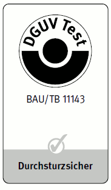
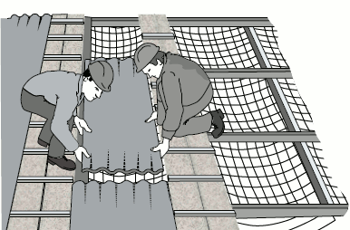

Bestehen Dachflächen oder Teile von Dachflächen aus nicht durchsturzsicheren Bauteilen, sind neben den Maßnahmen gegen Absturz nach Abschnitt 3 besondere Maßnahmen bezüglich der Begehbarkeit erforderlich.
Siehe
Als nicht durchsturzsichere Bauteile gelten z. B.
Die Durchsturzsicherheit kann nach den Grundsätzen für die Prüfung und Zertifizierung der bedingten Betretbarkeit oder Durchsturzsicherheit von Bauteilen bei Bau- oder Instandhaltungsarbeiten (GS-BAU-18) nachgewiesen werden.
Mit dem DGUV Test Zeichen und dem Zusatz "Durchsturzsicher" gekennzeichnete Bauteile gelten als uneingeschränkt durchsturzsicher.

Abb. 20 Prüfzeichen für geprüfte Lichtkuppeln oder Lichtbänder
Nicht durchsturzsichere Bauteile dürfen unter Berücksichtigung der Maßnahmen zur Absturzsicherung nur auf tragfähigen Lauf- und Arbeitsstegen betreten werden, diese Stege müssen mindestens 0,5 m breit sein. Maßnahmen zur Absturzsicherung können z. B. sein:

Abb. 21 Lauf- und Arbeitsstege auf nicht durchsturzsicheren Bauteilen unter Verwendung von Schutznetzen als Absturzsicherung
Siehe
Lauf- und Arbeitsstege aus Holz auf nicht durchsturzsicheren Bauteilen müssen mindestens der Sortierklasse S10 nach DIN 4074-1 entsprechen, Querschnitte und Stützweiten nach Tabelle 4 haben sich in der Praxis bewährt.
Tabelle 4 Bewährte Querschnitte und Stützweiten (in m) für Lauf- und Arbeitsstege aus Holz
| Brett- oder Bohlenbreite | Brett- oder Bohlendicke | ||||
| 3,0 cm | 3,5 cm | 4,0 cm | 4,5 cm | 5,0 cm | |
| 20 cm | 1,25 m | 1,50 m | 1,75 m | 2,25 m | 2,50 m |
| 24 und 28 cm | 1,25 m | 1,75 m | 2,25 m | 2,50 m | 2,75 m |
Lauf- und Arbeitsstege müssen gegen unbeabsichtigtes Verschieben oder Abrutschen/ Abheben gesichert sein. Wenn die Steigung mehr als 1:5 (über 11°) beträgt, müssen Trittleisten angebracht sein, ist das Verhältnis steiler als 1:1,75 (über 30°) sind Trittstufen vorzusehen.
Dachflächen bei denen Dachlatten verwendet wurden, die nicht der Sortierklasse S10 nach DIN 4074-1 und den Abmessungen nach Tabelle 3 entsprechen, sind nicht sicher begehbar. Werden diese Dachflächen und Dachlatten im Rahmen der auszuführenden Arbeiten als Arbeitsplatz oder Verkehrsweg genutzt, sind neben den Festlegungen zur Absturzsicherung (siehe Abschnitt 3.3) nach innen und außen zusätzliche Maßnahmen zu treffen, z. B.: